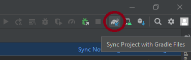
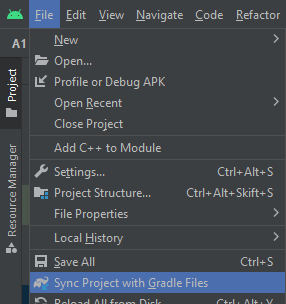
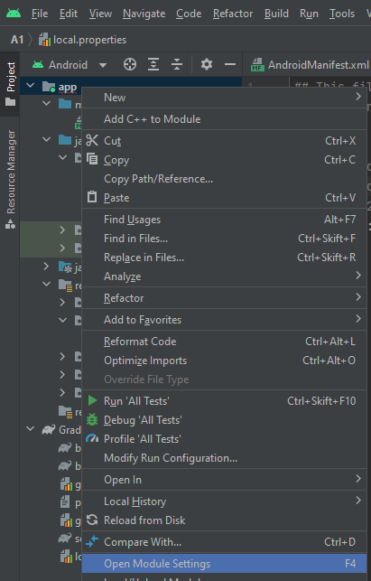
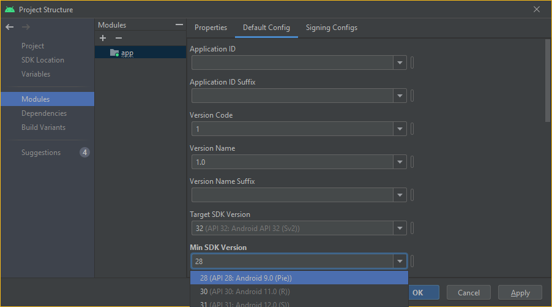

Changing API level Android Studio
I want to change the minimum SDK version in Android Studio from API 12 to API 14. I have tried changing it in the manifest file, i.e.,
<uses-sdk
android:minSdkVersion="14"
android:targetSdkVersion="18" />
and rebuilding the project, but I still get the Android Studio IDE throwing up some errors. I presume I have to set the min SDK in 'project properties' or something similar so the IDE recognizes the change, but I can't find where this is done in Android Studio.
Answer
When you want to update your minSdkVersion in an existing Android project...
-
Update
build.gradle (Module: YourProject)under Gradle Script and
make sure that it is NOTbuild.gradle (Project: YourProject.app).
An example of build.gradle:
apply plugin: 'com.android.application' android { compileSdkVersion 28 buildToolsVersion "28.0.2" defaultConfig { applicationId "com.stackoverflow.answer" minSdkVersion 21 targetSdkVersion 28 versionCode 1 versionName "1.0" } buildTypes { release { minifyEnabled false proguardFiles getDefaultProguardFile('proguard-android.txt'), 'proguard-rules.pro' } } dependencies { androidTestCompile 'junit:junit:4.12' compile fileTree(dir: 'libs', include: ['*.jar']) }
- Sync gradle button (refresh all gradle projects also works).

or

- Rebuild project
After updating the build.gradle 's minSdkVersion, you have to click on
the button to sync gradle file ("Sync Project with Gradle files"). That will
clear the marker.
Updating manifest.xml , for e.g. deleting any references to SDK levels in the manifest file, is NOT necessary anymore in Android Studio.
Suggest
Update 2022
For Android Studio users:
-
Right click the App directory and
Choose the " Open Module Settings " (F4) option  -
Change the " Min SDK Version " in the Default Config tab
 NOTE:
You might also want to change;
the " Target SDK Version " in the Default Config tab and
the " Compile SDK Version " in the Properties tab
-
Click Apply , then OK , and Gradle should automatically be synced
For users of older Android Studio versions:
-
Right click the App directory and
Choose the " Module Setting " (F4) option -
Change the ADK Platform to what you need
- Click OK and Gradle should automatically be synced